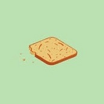
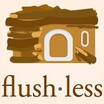

Portfolio
Projects made by some of our members,
from mobile applications to artificial intelligence and machine learning.

Breadcrumbs
by Jehoshaph Chandran, Shashank Khanna, Parav Nagarsheth, and Takashi Wickes
Uses iBeacon technology to get a notification when you are nearby a beacon. Learn more about the location and post stories for other to view.

Flushless
by Susanne Chan, John Henning, Nikhil Thota, and Takashi Wickes
An attachable device using Particle Spark Core and proximity sensor to convert urinal sensors into smart sensors. This reduces 70-90% of water usave, saving approximately 32,000 gallons of water annually.
GunLoc
by JR Aviles, Troy Gittelmacher, Bernard Marger, and Faizan Virani
View the status of a firearm on a web application to ensure that your firearm is secure at all times.
PicTrip
by Collin Irwin, and Killian McCoy
Users can identify a famous landmark in any picture on the internet and discover ways to travel there as easily (and inexpensively) as possible.
SignOn
by Kevin Chow, John Henning, Chris Pirillo, and Prince Wilson
Captures an image of an ASL character and using neural networks, outputs a potential character it corresponds to.